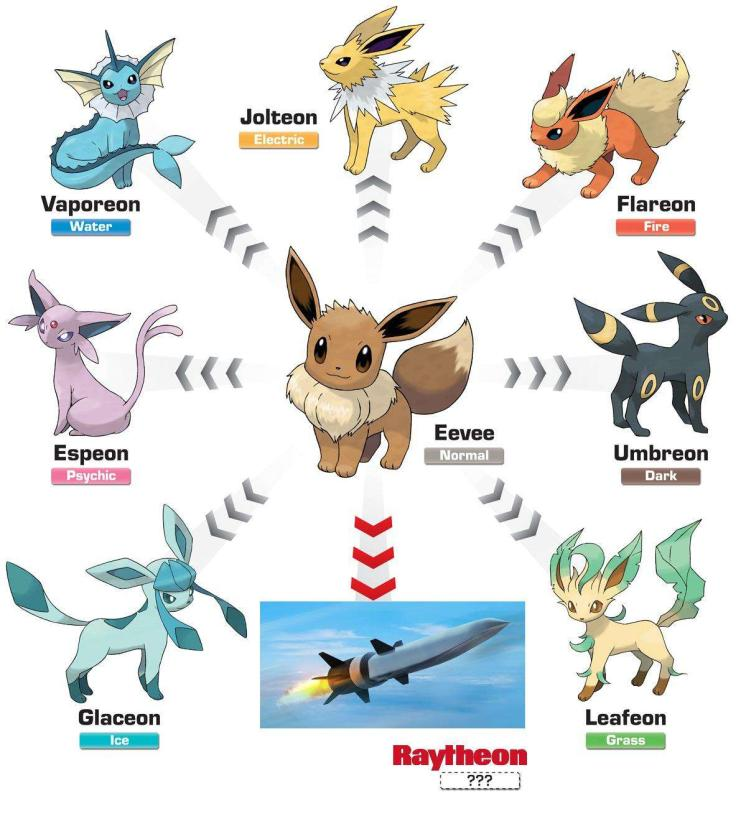
A bit more tree growth
All that we’re leaving behind
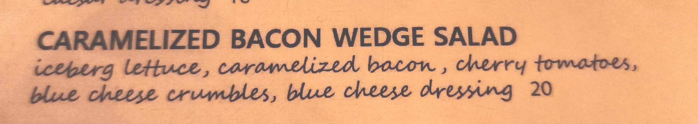
https://padlet.com/wstyler/ebl0u0v2ukq3
Let’s take it piece by piece :)
Work through each chunk
Click in with ‘B’ when you start a chunk, and ‘A’ when you finish, and ‘E’ if you’re lost
https://padlet.com/wstyler/ebl0u0v2ukq3
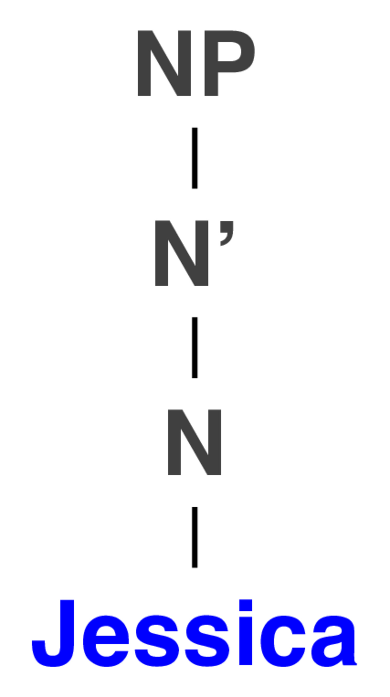
https://padlet.com/wstyler/ebl0u0v2ukq3

https://padlet.com/wstyler/ebl0u0v2ukq3
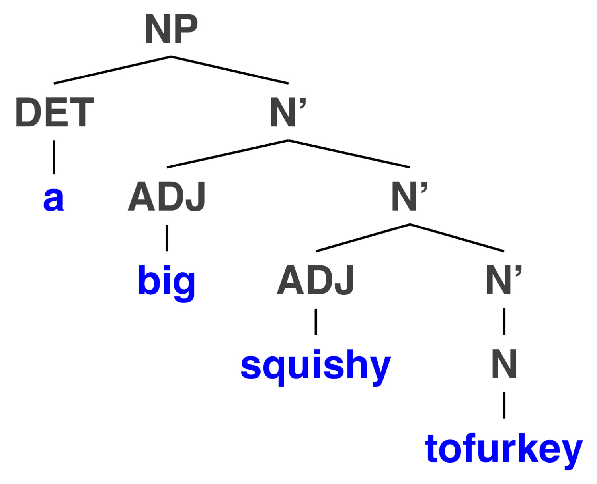
https://padlet.com/wstyler/ebl0u0v2ukq3
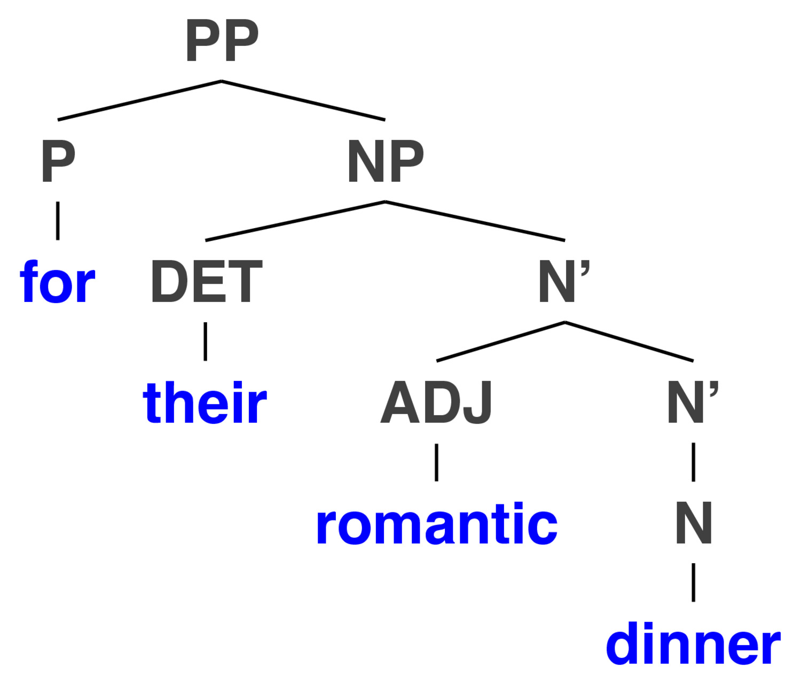
https://padlet.com/wstyler/ebl0u0v2ukq3
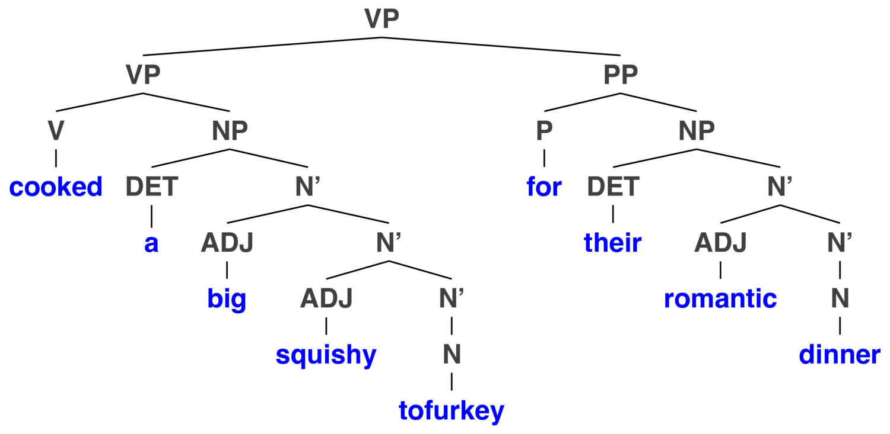
https://padlet.com/wstyler/ebl0u0v2ukq3
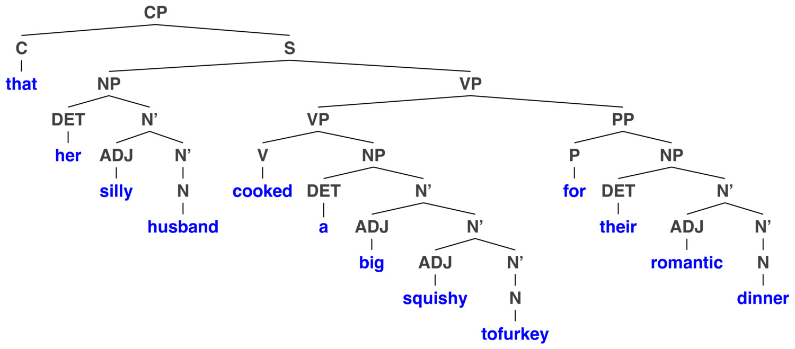
https://padlet.com/wstyler/ebl0u0v2ukq3
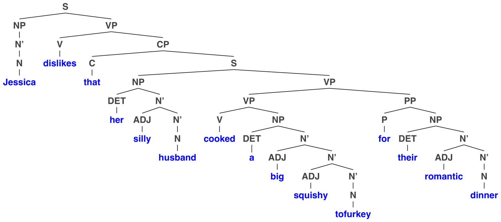
| 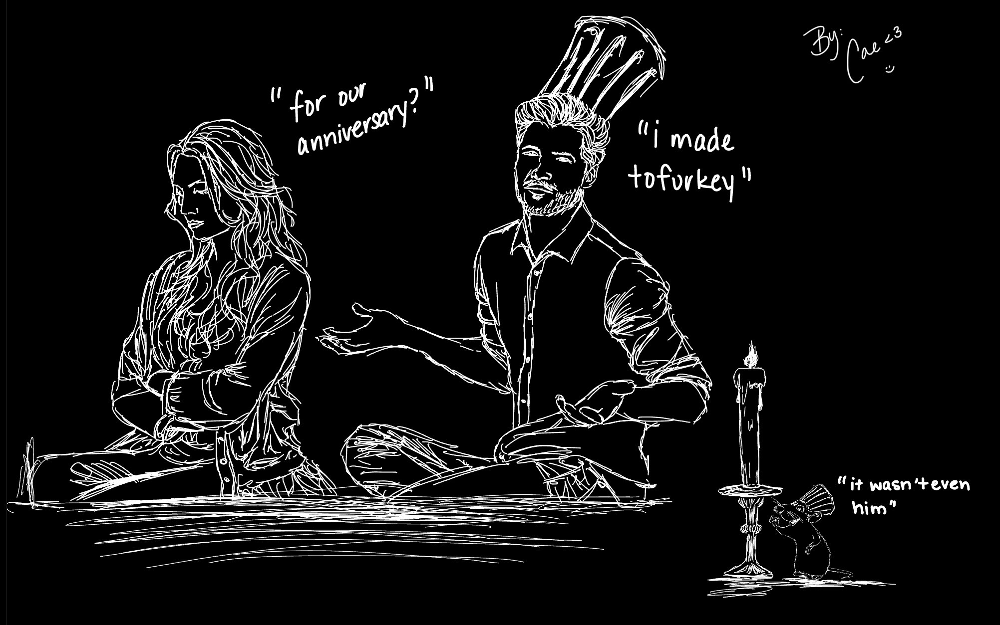 |
| (Thanks to Cae, Fall 2022) |
Here’s another one!
Spoiler alert.
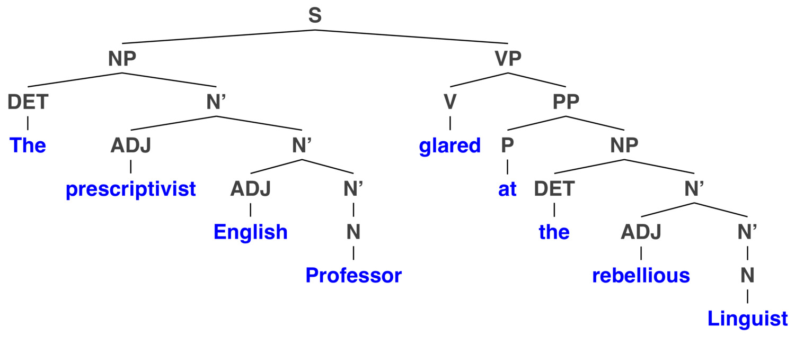
There’s too much awesomeness to Syntax for me to cover in three classes
We need to focus on what’s crucial
… over what’s awesome
Weird things will be done by sentences.
Weird things will be the things that sentences do.
What will sentences do?
Will sentences do weird things?
Miguel threw Rajesh the ball.
Rajesh was thrown the ball.
Passive voice turns the object of a sentence into the subject
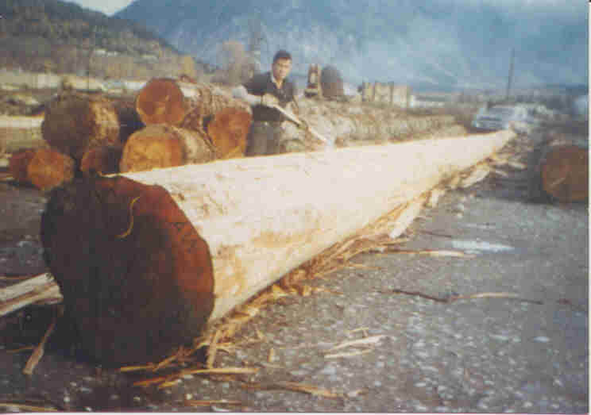
Can Jessica buy Cheerios?
It was Jessica who bought the Cheerios
Cheerios are what Jessica bought
Who can buy Cheerios?
What can Jessica buy?
Jessica can buy what?
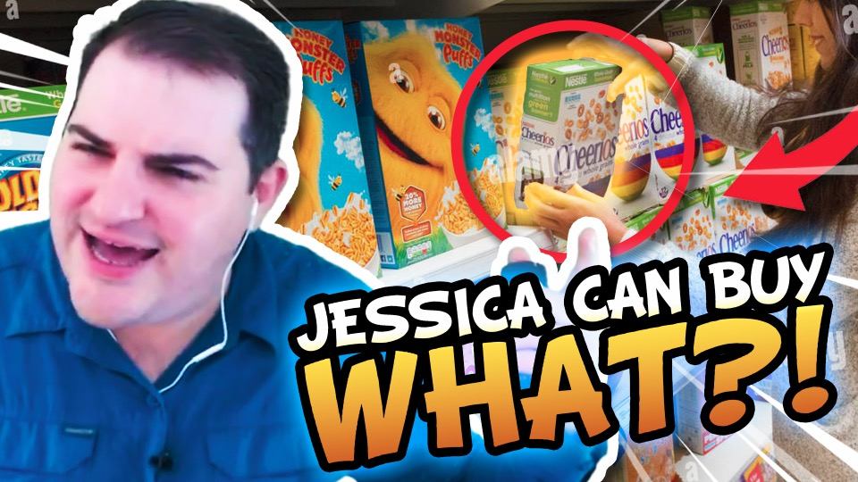
(Thanks Jaron from W22!)
Your book gets a bit deeper into this than we have time to
… but it’s cooooooool.
Sentences which are easy to incorrectly parse at first
The old man the boat.
The complex houses married soldiers and their families.
The girl told the story cried.
The man who whistles tunes pianos.
The war on plastic faces setback as cost of recycled material soars
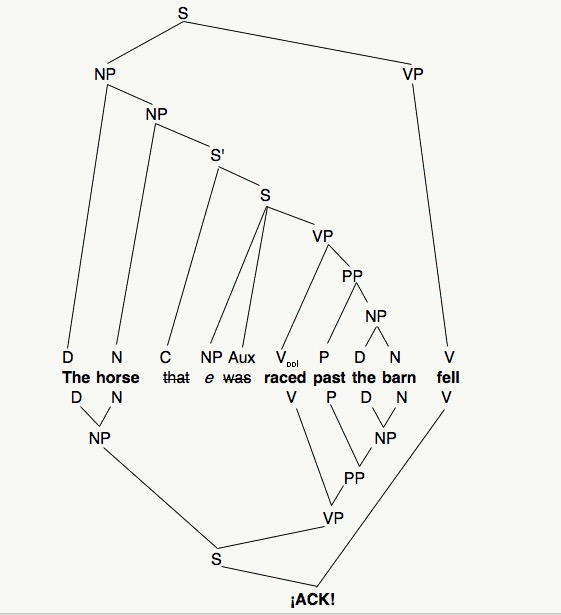
Source: http://languagelog.ldc.upenn.edu/nll/?p=167
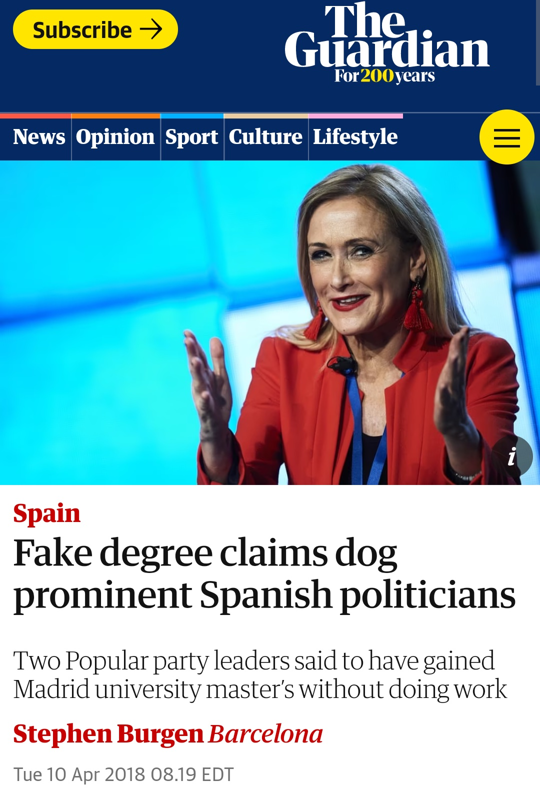
More people have been to Russia than I have.
More undergrads text their friends during the week than I text my friends.
What do these actually mean?!?
… and they show that we can have instincts which make something ‘seem’ grammatical and sensical which actually isn’t!
The factors which make these feel more or less acceptable are a subject of syntactic research
They can even happen in natural speech
An apparently new speech disorder a linguistics department our correspondent visited was affected by has appeared.
The cause experts the LSA sent investigate remains elusive.
Physicians neurologists psychologists other linguists called for help called for help called for help didn’t help either.
The patient the nurse the doctor consulted was sick.
“Crispy Ahi Tuna Tacos”
There are many theories and approaches, each with pros and cons
This is the case in anything in Linguistics, but especially here!
Not all languages put the Subject (do-er) before the verb, which is followed by the object (which is being affected) (‘SVO’)
Lakota is SOV, with postpositions
ASL is OSV
Spanish adjectives are after the noun
Russian can move the arguments around to help make your point
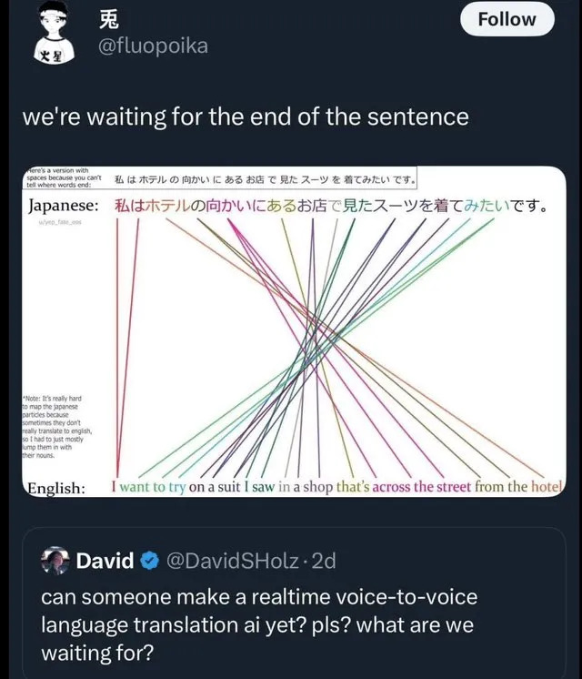
What syntax is
How sentences are composed hierarchically
… and how grammar works for sentences

Rule 8: VP -> V
Rule 9: VP -> V NP
VP -> V: Will slept
VP -> V NP: Will slept Jessica
VP -> V: Will dreamed
VP -> V NP: Will dreamed Jessica
VP -> V: Will walked
VP -> V NP: Will walked Jessica
Verbs that only take a single argument, the ‘subject’
VP -> V NP: Will hugged Jessica
VP -> V: Will hugged
VP -> V: Will moved
VP -> V NP: Will moved Jessica
VP -> V: Will saw
VP -> V NP: Will saw Jessica
Verbs that can take two arguments, a subject and an object
VP -> V: Will baked
VP -> V NP: Will baked a cake
VP -> V NP NP: Will baked Jessica a cake
VP -> V NP NP: ?Will baked a cake Jessica
VP -> V: Will found.
VP -> V NP: Will found a cake
VP -> V NP NP: Will found Jessica a cake
VP -> V NP NP: ?Will found a cake Jessica
VP -> V NP NP: Will found a cake some candles
Verbs that take a Subject and two objects
VP -> V: ?Will saw
VP -> V NP: Will saw a cake
VP -> V NP NP: ?Will saw Jessica a cake
VP -> V NP NP: *Will saw a cake Jessica
That was a phrase structure rule with three branches!
That happens sometimes, although there are usually other ways!
VP -> V: Will made
VP -> V NP: Will made a judge
VP -> V NP NP: Will made Jessica a judge
VP -> V NP NP: Will made a judge Jessica
VP -> V NP: Will made a judge (with his modelling clay)
VP -> V NP NP: Will made Jessica a robot
VP -> V NP NP: Will made a robot, Jessica
“I’m vibing.”
“I’m vibing you.”
“I’m vibing with this new album”
“I’m vibing this new album”
“I’m vibing her a new album”
Our phrase structure rules don’t universally apply
… and it seems to be lexically specific
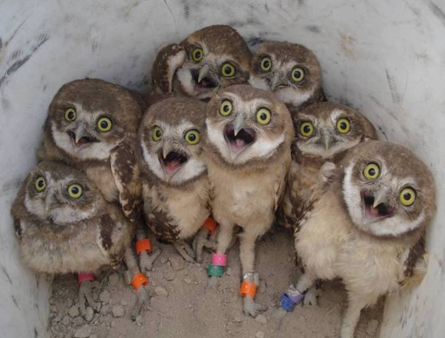